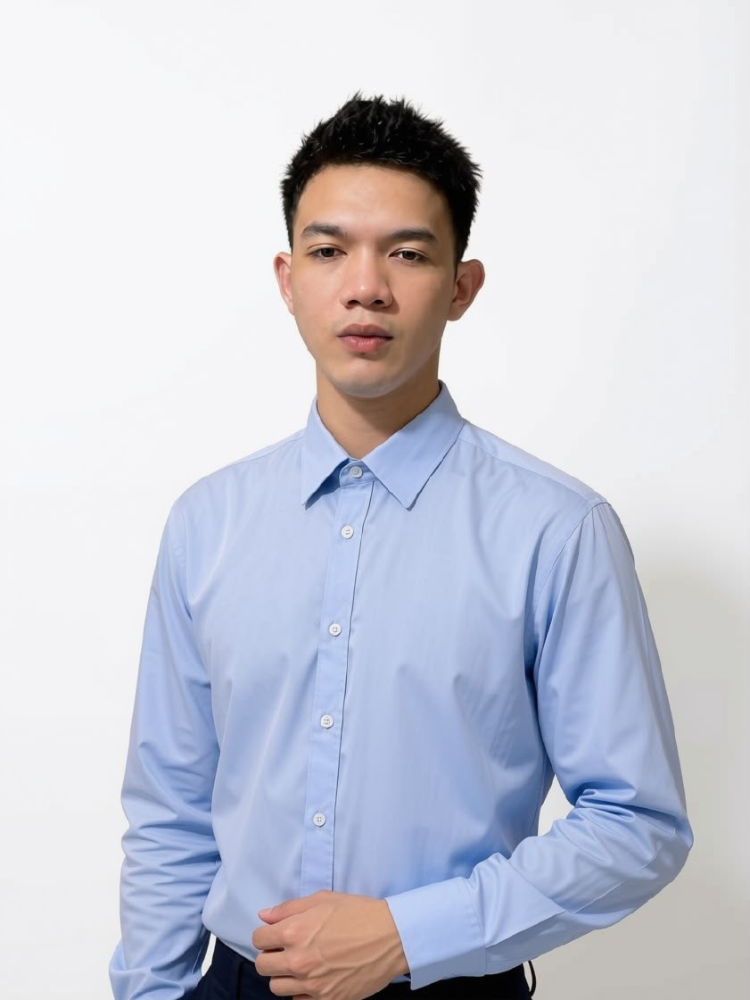
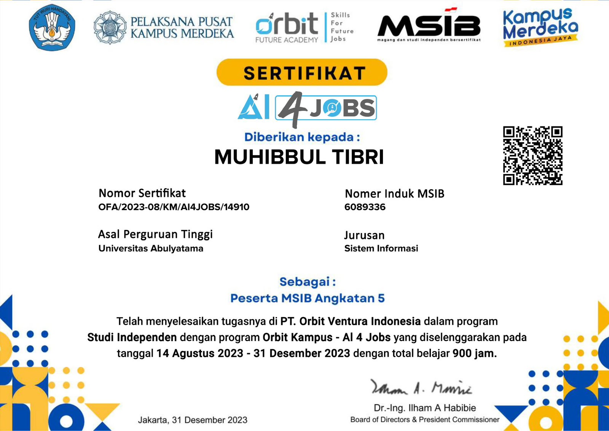

Hello, I'm
Muhibbul Tibri
Fresh Graduate S1 Sistem Informasi yang memiliki ketertarikan pada Web Development, System Analysis, Cyber Security, IT Support, dan Teknologi Digital. Memiliki semangat untuk terus belajar, mengembangkan kemampuan, dan membangun solusi teknologi yang bermanfaat.

TENTANG SAYA
Tentang Saya
Saya merupakan lulusan S1 Sistem Informasi yang memiliki rasa ingin tahu tinggi terhadap perkembangan teknologi. Saya senang mempelajari hal baru, memahami bagaimana sebuah sistem bekerja, serta mencari solusi ketika menghadapi suatu permasalahan.
Selama perkuliahan dan pengalaman magang, saya mendapatkan kesempatan untuk mengembangkan kemampuan teknis sekaligus belajar bekerja secara terstruktur, bertanggung jawab, dan beradaptasi dengan lingkungan baru.
Bagi saya, setiap pengalaman adalah kesempatan untuk berkembang. Saat ini, saya siap membawa kemampuan dan semangat belajar tersebut ke dunia profesional, menghadapi tantangan baru, serta memberikan kontribusi melalui teknologi.
TECHNICAL SKILLS
Technical Skills
Technology
Professional Skills
PENGALAMAN
Pengalaman
OV
PT Orbit Ventura Indonesia
Studi Independen / Magang — Orbit Kampus · AI 4 Jobs
Mengikuti program Studi Independen di bidang Artificial Intelligence, mengembangkan wawasan dan kemampuan teknologi melalui proses pembelajaran intensif serta kegiatan berbasis proyek.
Artificial IntelligenceIndependent Study900 Jam Belajar
SERTIFIKAT
Sertifikat

SERTIFIKAT PROGRAM
AI 4 Jobs
Sertifikat sebagai peserta MSIB Angkatan 5 yang telah menyelesaikan tugas di PT Orbit Ventura Indonesia dalam program Studi Independen Orbit Kampus — AI 4 Jobs.
PenyelenggaraPT Orbit Ventura Indonesia
ProgramOrbit Kampus — AI 4 Jobs
Durasi900 jam belajar
CONTACT
LET'S CONNECT
Saya terbuka untuk peluang kerja, kolaborasi, dan kesempatan belajar hal baru.